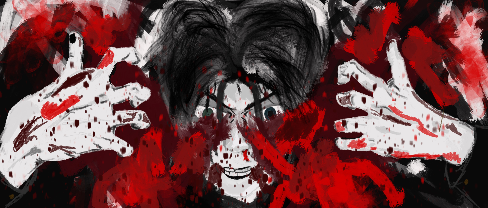
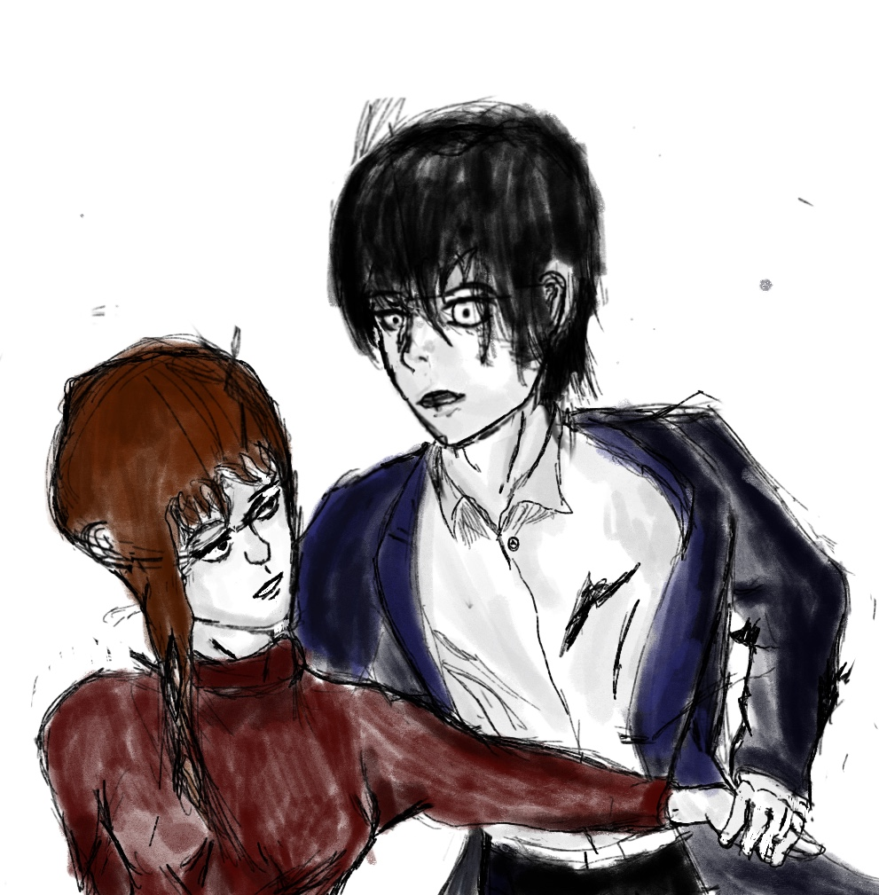
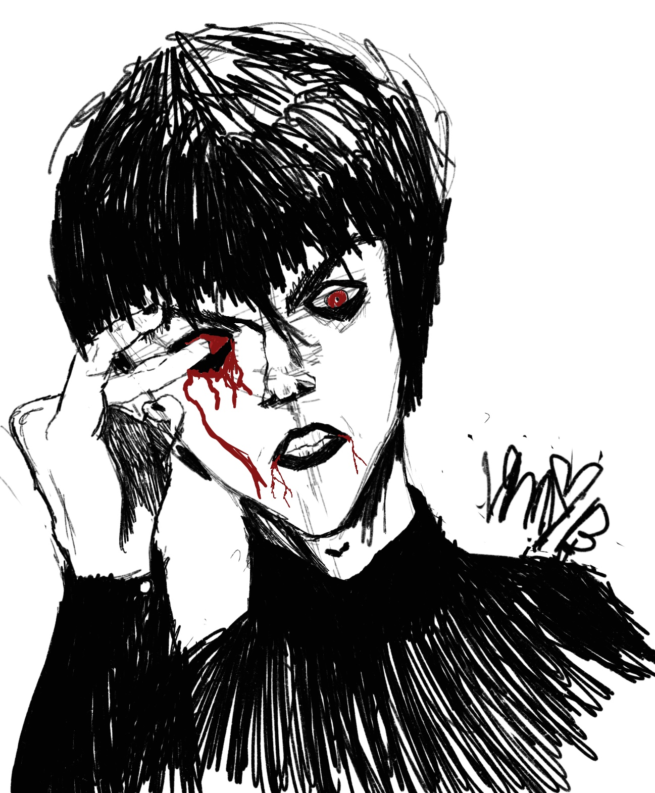
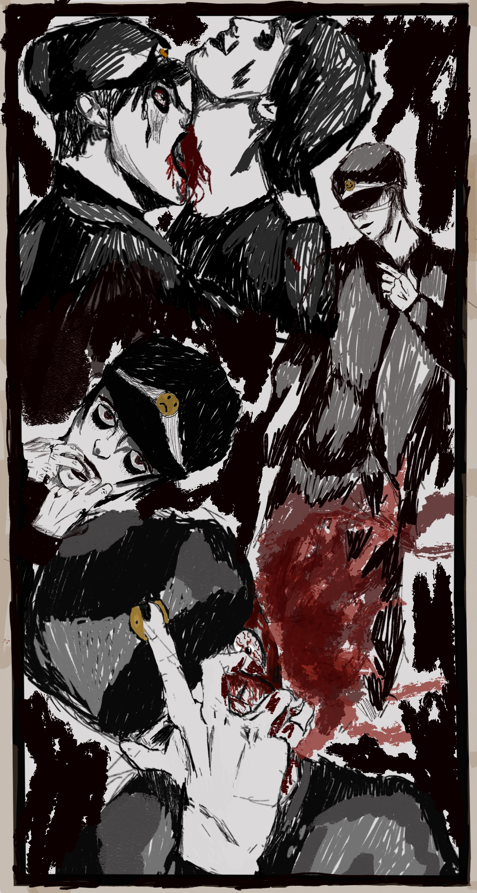
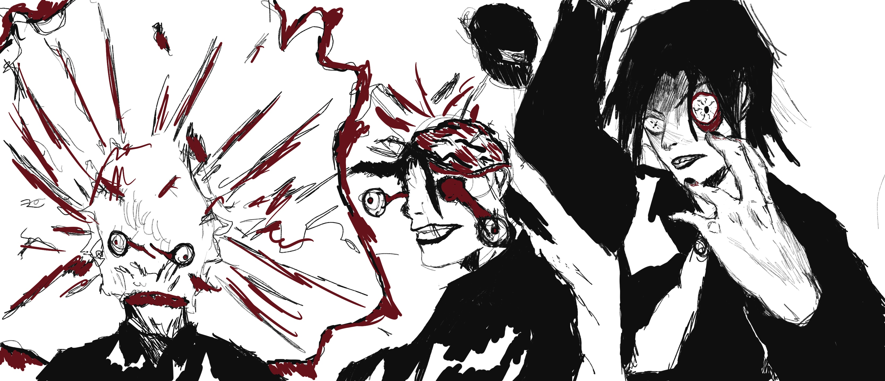
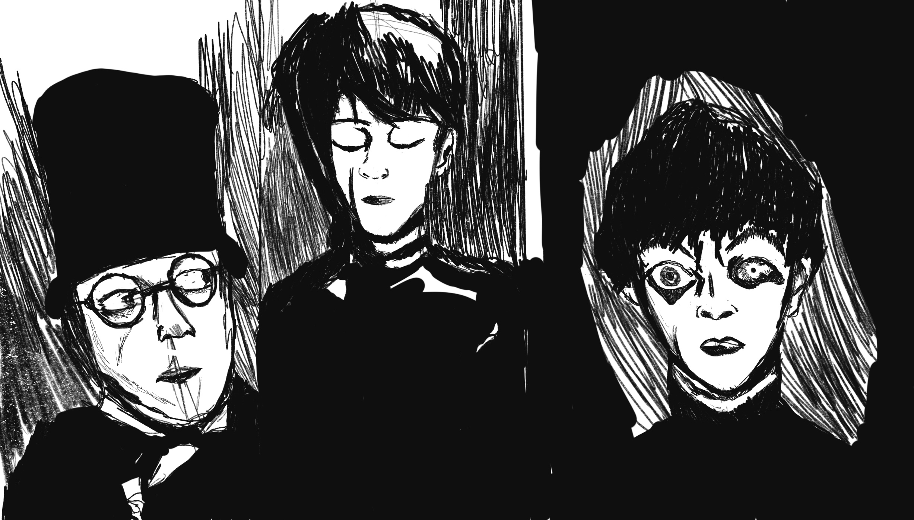
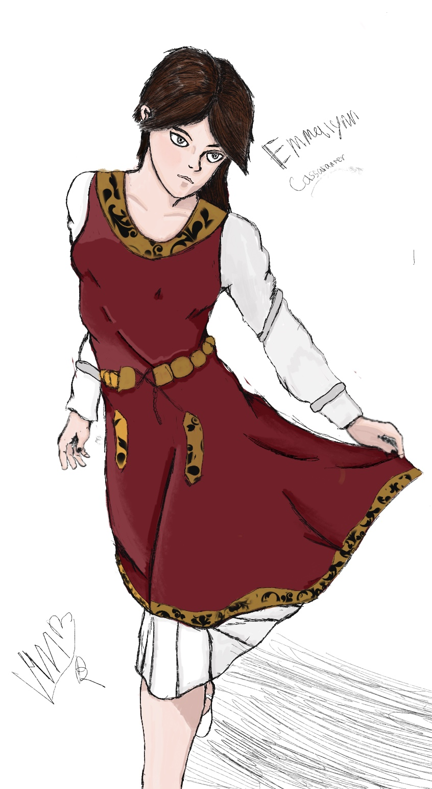
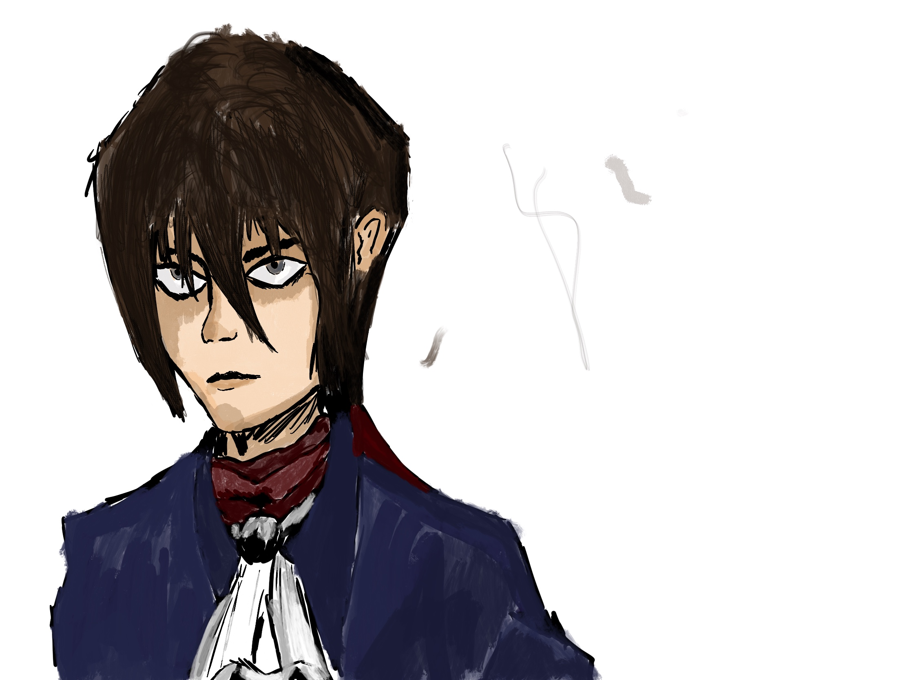
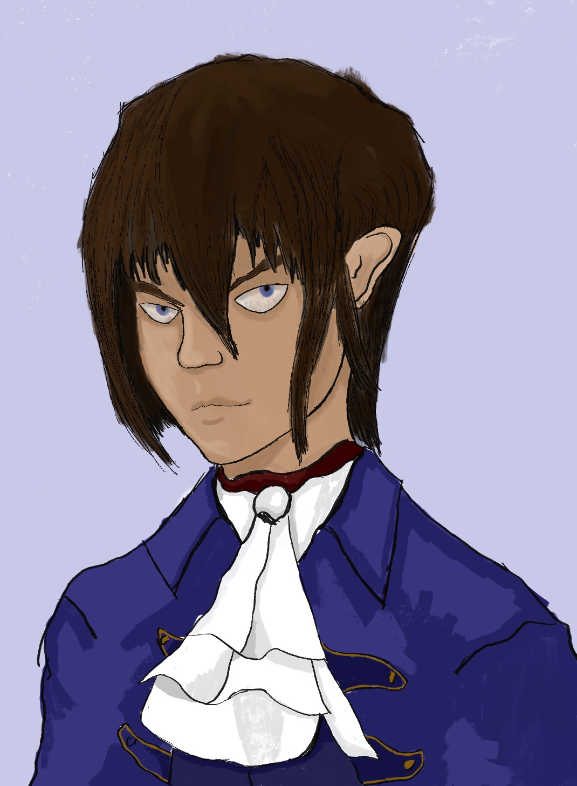
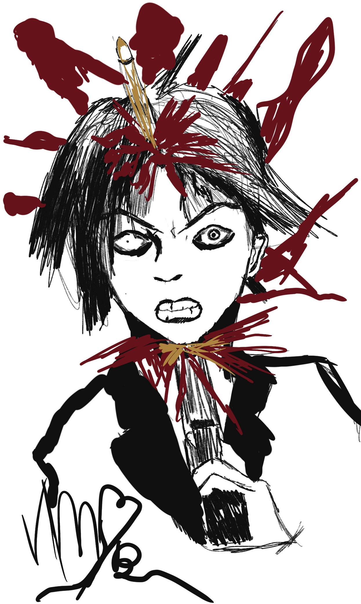

Hello and thank you for taking the time to check out my first online gallery.
Here you will see a collection of peices spanning over a 3 years timeline.
Since this is the first gallery, you will see peices from the very beginning to current.
I have tried to include everything thats worth including since I have first started drawing, but there is just simply too much.
Enjoy - Vincent
Peices
One
This is the first real painting I made. I see it as the start of my era of seriously making art.
I had just recently discoverd the horror art of Junji Ito and Suehiro Maruo and wanted to recreat something similar
to them but in my own style. I am actually quite happy with how this ended up looking and wish I could make something similar
to it now. I made this using procreate and the wet acrylic brush.
Captain
After I made my first peice and posted it to my instagram I created this the very next day. I enjoyed the first one so much I
just had to make another! The hat that is falling is a yacht captain's hat, I like how cleanly I managed to paint it.
Fun With Hands
This one really blew up on imgur for some reason. Maybe its the hands!
2People
I honeslty dont have much to say for this one. I wanted to try out a more abstract background and give the people a very painty feel. I love how the woman in front turned out.
Anerian Portrait
This is a portrait I made of one of my DND characters at the time. His name is Anerian Taimoda.
A Self Portrait
This is a self portrait I made for one of my classes. I really like how I drew myself in this one.
I had to go out and buy a bottle of ink to fill up the background with. Cost me about 2$ so I hope I got
some return on my investment!
Fredrich Portrait
This is another portrait I made for one of my DND characters. His name is Fredrich Von Gros,
he is a pugulist class (homebrew). He is very tough and smart, was going for a Robert Downy Jr
Sherlock Holmes kinda deal. He punched a lot of people when I played him, was pretty cool.
Depression Drawing
I guess I was depressed when I drew this :O.

Dielation
This one I wanted to make a really nice background for. I think this peice turned out really well to be honest. This was when I was really coming
around to drawing hands as well.

Anxiety of Attraction
This is a drawing I did without looking at any references, just pure imagination. Explains the skewed features and weird hands.
I like the title of this one and the way I drew the woman.
Me Again
Another self portrait but its me with white hair (I dont have white hair nor have I ever). I wanted to really make my mark
with how I painted this one, I think I used a picture of Kaneki Ken as a reference. Ha.

Fuck Eyes
You heard the man, fuck eyes.
EwEmo
Just some emo guy I guess. Maybe I should put more thought into these peices I make. I like the paint splats
they add nice depth to the peice, if only I could get those same splats in clip studio!

Intersections
I made this peice for a final submission in a life drawing course. People on instagram seemed to enjoyed it. I see a nice
spot on my wall where this could go.
Doors Close while others open
I made this peice after a tense moment in my life, I think this was my way of reflecting on it.

How to Explode Step by Step
Couple of dudes exploding. I like how I drew the man on the right. His eyes are very expressive.

The Cabinet of Dr.Caligari
Some Cabinet of Dr.Caligari fan art. I think Caligar could have been drawn better but I was confused on how to really
capture his image. Oh well.

Love Best Suited For a Swordsman / Emmalynn Cassalanter
The beautiful Emmalynn Cassalanter! The love interest of one of my DND characters (who you will meet next!).
If you are familiar with DND campaigns or heard of Waterdeep Dragon Heist then the last name Cassalanter might
sound familiar, she is the neice of lord Victoro.
I love the outfit I drew her in, I should really draw more womens fashion because it was quite fun.


Zeriss Amcathra
The legendary Zeriss Amcathra! Same as before if you know Waterdeep Dragon Heist the last name Amcathra might sound
familiar. He is the first born son to the Amcathra noble family and was on track to take over the family mantle, but adventure called
to him louder so he left his noble duties to explore the world and work to become the world's greatest swordsman.
I could speak on Zeriss for hours if you let me, but the gist of his character is: Cocky rich kid swordsman turned adventurer.
I hope to one day do something huge with this character because I absolutely adore him like a son and think there are many tales to be
told of him.
As for the peices, the 1st portrait on the left is the first portrait I made of him and the second on the right is the most recent portrait I made of him.

Anxiety
I called this one anxiety because of well anxiety, but also because I was kinda anxious to post this one for I didnt know what people
would think of it. In the end if I like it then thats really all that matters is what I came to realize(sounds pretty cliche :L).
Thank you for reaching the end < 3
the source code for this site is on github: Github
I dont do web development so its quite crude ;p
Once again I tried to add as many things as I could, but there is just simply so much stuff made over the years.
To keep up with me and see the things that werent in this gallery check out my Instagram!
Right now it is my main platform and where you will find everything I do publically!
Clicking on the below image will take you there! Again, I deeply apreciate you taking the time to check out my gallery!